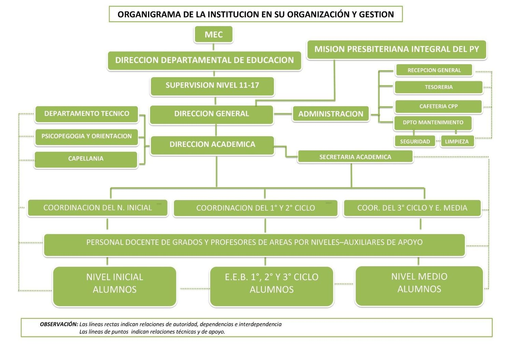
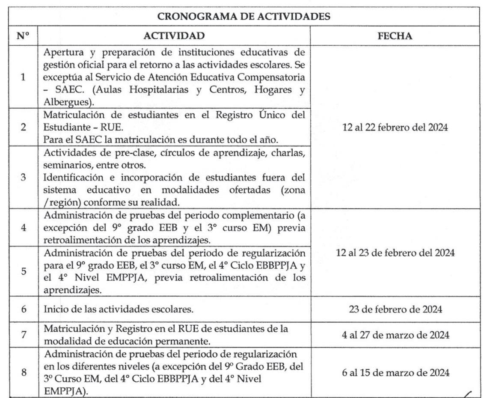
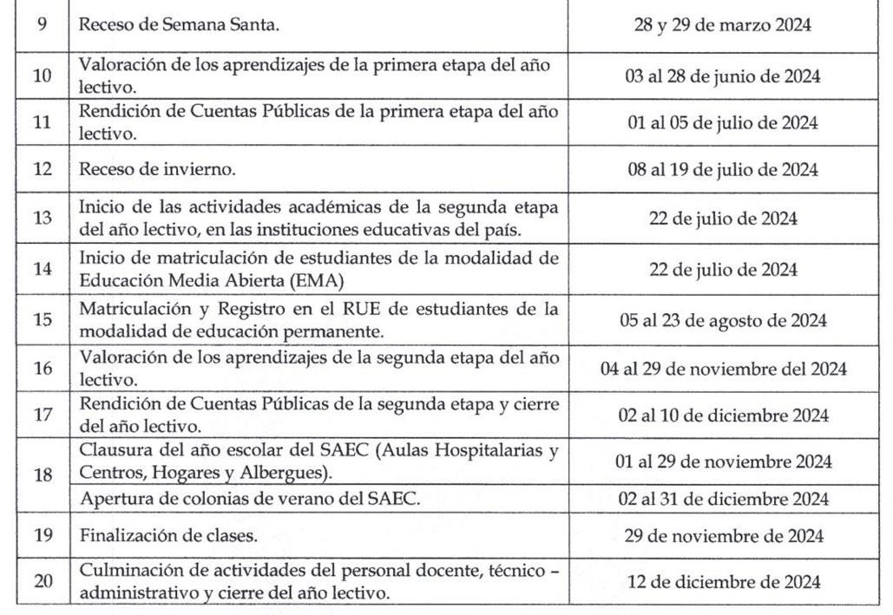

El Colegio Presbiteriano del Paraguay fue fundado en el año 2002 por los misioneros; Pastor Mg. Seong Woo Lee y su esposa la Misionera Lic. Hye Jeong Lee de nacionalidad coreana, miembros de la Misión Presbiteriana Integral del Paraguay. Los Misioneros Lee vinieron a Paraguay en el año 1994 para desarrollar su ministerio en el ámbito espiritual. Ante la realidad cultural y social con que se encontraron, nació en ellos la visión de influenciar y transformar la vida de las personas no solo espiritualmente sino también a través de una educación de calidad “Preparando una Nueva Generación” que impacte la sociedad y cambie la realidad en el Paraguay.
La visión del Colegio Presbiteriano del Paraguay desde sus inicios fue ser partícipe en la transformación de nuestra sociedad paraguaya, a partir de una acción educativa de calidad, asumiendo la misión formadora de futuros ciudadanos con capacidad de liderazgo, respetuosos de la vida y la diversidad, capaces de trabajar en equipo desarrollando valores cristianos compartidos, con capacidad reflexiva, crítica y creativa para potenciar en ellos la toma de decisiones con ética y compromiso moral en la búsqueda de posibles soluciones a los problemas emergentes de su entorno , natural personal, familiar y social.
Luego de 22 años de la creación institucional, este año iniciamos una nueva etapa que nos desafía al mejoramiento cuali-cuantitativo en todos los aspectos. En un nuevo periodo de cinco años 2024 a 2028 proyectamos nuestra gestión institucional hacia el crecimiento, expansión física y mejoramiento continuo con el lema: “Consolidando Juntos”.
Damos gracias al Señor por todo el camino recorrido en este tiempo, por las dificultades superadas, por los logros, y por sobre todo por “la primicia” de nuestros primeros egresados del Bachillerato con énfasis en Ciencias Básicas de nuestro Nivel Medio a fines del año 2015, marcando el cierre de una etapa y el inicio de este “Nuevo Tiempo Institucional”.
Hacia el cumplimiento de los sueños compartidos y con el compromiso asumido reconocemos en primer lugar nuestra necesidad de la dirección de Dios, de una visión clara direccional para marcar políticas de crecimiento y estabilidad institucional, del compromiso conjunto, del trabajo mancomunado de toda la Comunidad Educativa y del incremento del número de nuestros estudiantes, razón de toda nuestra acción educadora, motivo y motor de la existencia del CPP, que marquen la sostenibilidad de la labor Institucional.
CAPÍTULO IDATOS DE LA INSTITUCIÓN EDUCATIVA
Institución: Col y Esc Básica Priv Nº 6095 Presbiteriano del Paraguay.
Dirección: Capitán Andrés Insfrán esq. Nuestra Señora del Pilar.
Ciudad: Luque
Barrio: Isla Bogado
Departamento: Central
Área Educativa: 11-17
Gestión: Privada
Niveles de Enseñanza: Inicial, 1°, 2° y 3° ciclo, Nivel Medio
Supervisora Pedagógica: Mg. María Elisa Borjas Penayo
Directora General: Lic. Adelina Lee.
Directora Académica: Lic. Ana María González Alen de Zaracho.
Correo: edu.cpp@gmail.com
MISIÓN Y VISIÓN INSTITUCIONAL.
MISIÓN: La Gestión Institucional asume la misión de Educar con calidad basados en principios bíblicos y visión compartida por las metas de la educación paraguaya en un ambiente dinámico, participativo y cooperativo, para el desarrollo de capacidades personales y sociales, en la construcción de una sociedad mejor y para la extensión el reino de Dios.
VISIÓN: El Colegio Presbiteriano del Paraguay es una Institución Educativa Cristiana de excelencia, basada en la palabra de Dios, formadora de personas veraces, responsables, autónomas y cooperativas; capaces de actuar en forma solidaria, creativa y respetuosa, ante los desafíos que demanda el mundo actual y dar respuestas asertivas a su destino temporal y eterno
DE LOS PRINCIPIOS FILOSÓFICOS, TEOLÓGICOS Y DE GESTIÓN INSTITUCIONAL
La Institución basa su acción educativa atendiendo los Principios Filosóficos expresados en la Reforma Educativa Paraguaya en cuanto a:
La Persona: (pensamiento creativo, crítico y reflexivo, integrar valores, relación consigo mismo, con los demás y con la naturaleza).
La Democracia: (promover hábitos democráticos, la participación de los padres y del alumnado, erradicar autoritarismo y prepotencia, como también prácticas cortesanas y adulatorias).
La equidad: (igualdad de oportunidades, tanto a nivel de género como acceso a la educación de calidad).
El Trabajo: (valorar el trabajo, capacitación técnica, actitud de investigación y capación permanente, orientada a mejorar la calidad de vida.
La Calidad Educativa: (excelencia, formación personalizada, destrezas para la vida).
La Identidad Cultural: (afianzar nuestra identidad, por sobre todo el bilingüismo y respetar las demás culturas).
Los Principios teológicos que orientan la gestión Institucional.
El Colegio Presbiteriano del Paraguay es un ministerio educacional basado en los principios bíblicos de: Verdad, Capacidad y Servicio.
La Verdad: Mediante La Verdad Llegamos A La Fe, Mediante La Fe Llegamos A La Salvación Y Mediante La Salvación Llegamos A La Vida Eterna. Inculcamos A Nuestros Alumnos El Amor A La Verdad, A Ser Sinceros Consigo Mismos Y Con Los Demás.
La Capacidad: Las capacidades impregnadas de virtudes provienen de Dios y nos llevan a ser mejores seres humanos. Orientamos el desarrollo de las capacidades personales y sociales en nuestros alumnos en busca de una mejor calidad de vida personal y comunitaria.
El Servicio: Cristo por amor a la humanidad entregó su vida para salvar al mundo; nosotros como sus discípulos, debemos estar dispuestos a poner nuestra vida para servir a los demás. Promovemos el desarrollo del carácter de nuestros alumnos basados en el amor y el servicio a Dios, a la familia, a la patria y a los demás.
Estos principios que manifiestan los mandatos bíblicos a ser enseñados por los padres a sus hijos y hacer extensivo hasta lo último de la tierra se constituyen en pilares de nuestra institución y se dividen en tres áreas:
Trabajar conjuntamente con los padres para ayudarles a cumplir su responsabilidad en educar a sus hijos.
Desarrollar en cada alumno/a las cualidades del carácter de Jesucristo, potenciando sus propias potencialidades.
Proveer en cada estudiante, una formación personal y social para mejorar su calidad de vida a través de la educación, donde cada alumno/a desarrolle su formación integral atendiendo su individualidad para ser partícipe comprometido en un mundo en constante transformación.
Los Principios de Gestión Institucional.
Trabajo en Equipo: El trabajo en equipo une a las personas en la búsqueda de metas y objetivos comunes. Produce un mejor entendimiento entre compañeros de trabajo, por el esfuerzo compartido, interdependencia y cooperación. Desarrolla el liderazgo.
Disciplina: Entendiéndose como organización, orden, autocontrol, corrección y perfeccionamiento en la formación del carácter y formar buenos hábitos. Es una de las tareas más importantes de la vida para lograr el éxito.
Liderazgo: Es proceso y producto resultante de la motivación y trabajo conjunto de varias personas para el logro de sus metas y objetivos. Implica: Visión, inspiración, dirección, motivación y trabajo en equipo.
Calidad: Proceso y resultado de la capacidad de mejora continua para responder a las necesidades y alcanzar un nivel de excelencia que satisfaga las demandas y expectativas, mediante la activa participación de todos los integrantes de la Comunidad educativa.
Antecedente Histórico de la Institución
El Colegio El Colegio Presbiteriano del Paraguay fue fundado en el año 2002 por el misionero Pastor Mg. Seong Woo Lee (Daniel Lee) y su esposa la Misionera Lic. Hye Jeong Lee (Adelina Lee), ambos de nacionalidad coreana, miembros de la Misión Presbiteriana Integral del Paraguay.
Ellos al llegar a Paraguay buscaron la dirección de Dios sobre el ámbito en que debían desarrollar su ministerio espiritual y social, y quedaron impactados, al percatarse que los problemas sociales y económicos estaban relacionados en gran medida a la falta de una educación de calidad y a la falta de estabilidad familiar, al ver tantos niños trabajando en las calles, tantos matrimonios desintegrados, y otros problemas sociales por falta de desarrollo en un país con tanto potencial. Evaluando tantas necesidades, nació en ellos la visión de ayudar en el Paraguay y potenciar la transformación de la vida de sus habitantes a través de la educación y el servicio a Dios.
Los Misioneros Lee, llegados a Paraguay, luego de su etapa de adaptación del aprendizaje del idioma español y de la cultura paraguaya, se abocaron a la búsqueda de un terreno para iniciar la obra. Al llegar a la localidad de Luque, específicamente en “Isla Bogado”, les llamó la atención un hermoso predio e iniciaron las tentativas de compra del terreno, luego de varios intentos se consiguió la adquisición del terreno donde actualmente funciona el Colegio Presbiteriano del Paraguay y la Iglesia Presbiteriana “Yvaga Rapé. La compra se realizó gracias a ofrendas de personas generosas de Corea, quienes compartiendo la visión de los Misioneros Lee e hicieron posible el inicio de la obra.
La construcción empezó en el 2001, y en el año 2002 se dio apertura a la Esc. Básica Privada Nº 6095 “Presbiteriano del Paraguay”, con reconocimiento del MEC por Resolución Nº 441 del 02 de abril de 2002; dándose apertura al Nivel Medio por Resolución Nº 120 del 23 de enero, emitida por el MEC. En diciembre de 2015 hemos entregado a la sociedad paraguaya nuestro primer grupo de egresados del Bachillerato con énfasis en Ciencias Básicas, como primer producto de nuestra acción educativa.
Actualmente el “CPP”, ofrece servicio educativo desde el Nivel Inicial hasta el Nivel Medio de acuerdo a la demanda educativa en cada nivel.

PERFIL DEL EGRESADO DEL CPP.
El alumno egresado del Bachillerato del CPP:
Posee desarrolladas sus capacidades cognitivas para la construcción de conocimientos significativos, y el manejo de destrezas y habilidades para su desempeño en el nivel superior.
Posee conocimientos de la cultura sistematizada y habilidades para seleccionar, guardar y utilizar información actualizada y relevante.
Participa en forma creativa y responsablemente según lo demanda su entorno y es capaz de actuar en una sociedad rápidamente cambiante.
Está formado como ciudadano responsable, solidario, respetuoso del valor de la libertad, reflexivo y crítico, con la capacidad de juzgar valorativamente el accionar propio y ajeno.
Maneja destrezas de la comunicación en la lengua propia y posee conocimientos de lengua extranjera, así como de la tecnología, para manejarse en el mundo actual y globalizado.
Posee capacidad de trabajar en forma individual y cooperativa, expresando con respeto sus ideas y sentimientos, y respetando diferencias de los demás.
Posee conciencia como ciudadano del mundo y asume su compromiso del cuidado del ambiente.
Valora los principios cristianos y los pone en práctica como modo de vida.
PERFIL DE EDUCADOR
Un profesional con título, matriculado y habilitado para el ejercicio de la docencia. Además, está en pleno goce de sus facultades para las actividades educativas.
Es cristiano comprometido con Dios en comunión con el cuerpo de Cristo en una comunidad cristiana (iglesia).
Domina los contenidos de su área de formación profesional.
Establece metas, planifica (pero es flexible), es perseverante, enseña hábitos de estudio, posee y propicia autoestima, desarrolla cognición y meta cognición.
Planifica y regula los contenidos de enseñanza para los aprendizajes, favorece y evalúa los progresos; organiza el contexto facilitando la interacción de los alumnos con los materiales y el trabajo colaborativo.
Fomenta el logro de aprendizajes significativos, transferibles.
Fomenta la búsqueda de la novedad: curiosidad intelectual, originalidad.
Desarrolla el pensamiento convergente, siendo su principal objetivo que el alumno/a construya habilidades para lograr su plena autonomía.
Comparte las experiencias de aprendizaje con los alumnos: discusión reflexiva, fomento de la empatía del grupo.
Atiende las diferencias individuales y desarrolla en los alumnos actitudes positivas y valores.
Instruye positivamente para que sus alumnos comprendan las verdades de la Palabra de Dios.
Calendario Escolar MEC


Calendario Institucional
Mes
Actividad
Enero
Inicio de Actividades del Equipo de Gestión
Febrero
Inicio de clases
Reunión de Informativas con padres de todos los niveles
Marzo
Campamento del 2° ciclo
Abril
Campamento del 3° ciclo y N. Medio
Semana Santa
Feriado Nacional del día del Trabajador
Mayo
Feriado Nacional día de la Independencia
Feriado Nacional día de las Madres
Dia de la Familia
Junio
Feriado Nacional Paz del Chaco
Spelling Bee 1° Y 2° ciclo
Entrega de Informe Académicos 1° etapa
Julio
Receso escolar de Invierno
Festejo día de la Amistad
Festejo del día del Niño
Agosto
Feriado Nacional fundación de la Ciudad de Asunción
Expo Ciencias Nivel Inicial
Dia del Folclore Paraguayo
Expo Ciencias del 1°, 2°, 3° ciclo y Nivel Medio
Septiembre
Festejo del día de la Juventud
Feriado Nacional Batalla de Boquerón
Octubre
Clausura de los Juegos Escolares
Clausura de Ingles 1° y 2° ciclo
Noviembre
Clausura del Nivel Inicial
Culto de Acción de gracias
Graduación del 3° curso
Diciembre
Feriado Nacional Virgen de Caacupé
Entrega de Informe Académicos de la 2° etapa
Culminación de las Actividades con los Docentes
Obs. Las actividades indicadas en el cronograma están sujeto a cambios.
CAPÍTULO IIDIAGNÓSTICO INSTITUCIONAL.
La convivencia escolar en un ambiente de coexistencia pacífica que dan marco a una gestión pedagógica y relacional de un servicio de calidad educativa, es el propósito fundamental de la gestión educativa Institucional.
Se utiliza la evaluación en cada dimensión de la gestión institucional a final de cada etapa a través del análisis FODA, por el cual se han detectados para este documento las siguientes situaciones:
Fortalezas:
Compromiso de los integrantes con los principios y valores institucionales.
Respeto de los miembros (Docentes, Alumnos, Personal, Familias, de los códigos y pautas establecidos para la convivencia armónica dentro de la institución).
Reunión semanal con el equipo de gestión y con los docentes
Elaboración de cronograma de actividades anual.
Debilidades:
Liderazgo negativo de algunos estudiantes.
Falta de apoyo por parte de algunos padres en la educación de su hijo/a
Inestabilidad de permanencia en la Institución de algunos docentes
Amenazas:
Comunicación inapropiada por parte de algunos padres para manifestar inquietudes.
Migración de alumnos del 9º grado a otras instituciones educativas
Escasa cantidad de alumnos en el nivel medio
Oportunidades:
El marco de referencia emanado del MEC para la elaboración del documento.
El apoyo de las Familias para el cumplimiento de lo establecido como marco de convivencia organizada y armoniosa en la Comunidad Educativa.
Acompañamientos constantes a los alumnos según necesidad
CAPÍTULO IIIDESCRIPCIÓN DE ESTAMENTOS Y ROLES.
DIRECTIVOS: Es el Equipo de profesionales de la educación con formación superior, encargados de delinear las políticas educativas y la gestión institucional. El Equipo Directivo dirige, coordina, orienta, acompaña y supervisa las acciones conducentes al logro de los objetivos y metas educativas de la institución velando por el desempeño de los demás miembros a fin de garantizar el desarrollo integral de los educandos y la calidad del servicio educativo en el marco de una convivencia armónica, basada en los principios cristianos que sustenta el CPP.
Funciones: Son sus funciones principales entre otras…
Integrar el Equipo Directivo y de Gestión institucional y participar de las reuniones de trabajo convocadas por la Dirección General.
Definir las políticas orientadoras y de gestión institucional, así como los procedimientos de implementación.
Elaborar de forma participativa el PEI en forma trianual, y el POA. Realizando ajustes y correcciones en el proceso de implementación según necesidades.
Dirigir, supervisar, coordinar, administrar, evaluar y reorientar acciones en todos los ámbitos de la gestión institucional armonizando los vínculos entre los estamentos y sus integrantes.
Velar por el cumplimiento de las metas y objetivos, elevando el nivel de calidad del servicio educativo.
Establecer normativas de gestión tratando de armonizar las relaciones entre los miembros de todos los estamentos y niveles.
Supervisar la coordinada y coherente implementación del currículum y la puesta en marcha institucional de los procesos de enseñanza aprendizaje, así como de la evaluación de proceso y de resultados.
Representar a la institución ante los miembros de la Comunidad Educativa y las autoridades emanadas del MEC.
EQUIPO TÉCNICO
Funciones: Son sus funciones principales entre otras…
Participar del diagnóstico Institucional y de la elaboración del PEI-POA recabando y aportando información relevante.
Apoyar la gestión Directiva en todos los aspectos, coordinar la gestión institucional y armonizar los vínculos entre los estamentos y sus integrantes.
Planificar, coordinar y evaluar las actividades técnicas de la institución en concordancia con los lineamientos y políticas establecidas por la Institución y las normativas vigentes del MEC.
Entrevistar a los padres y evaluar a postulantes para la selección de ingresantes a la institución.
Coordinar con la Dirección Pedagógica y las Jefaturas de Niveles el proceso pedagógico para la implementación del currículum.
Asesorar la intervención psicológica en los procesos pedagógicos de los alumnos.
Brindar un servicio de orientación psicológica a los docentes y alumnos, compartir con los Padres las necesidades emergentes.
EQUIPO DOCENTE:
Funciones
Integrar el Equipo de Gestión institucional y participar de las reuniones de trabajo convocadas por la Dirección General, la Dirección Pedagógica, o Coordinación de nivel según corresponda.
Apoyar la gestión Directiva en todos los aspectos, coordinar la gestión institucional y armonizar los vínculos entre los estamentos y sus integrantes.
Participar del diagnóstico Institucional y de la elaboración del PEI-POA recabando y aportando información relevante.
Planificar y orientar la acción pedagógica en aula atendiendo las diferencias individuales y propiciando aprendizajes significativos en sus alumnos.
Supervisar el cumplimiento del Manual de Convivencia (Reglamento interno) y participar en forma directa de su aplicación
Establecer y/ o coordinar en forma conjunta con la Dirección Pedagógica y Coordinaciones de Nivel, los criterios e instrumentos de evaluación del proceso educativo que apunten a mejorar la calidad de los aprendizajes en todos los niveles y áreas.
Son Derechos de los Docentes, en relación a la convivencia:
Trabajar en un ambiente tolerante y de respeto mutuo considerando su condición de Profesional de la educación.
Ser respetado en su integridad física, sicológica y moral, no siendo objeto de tratos vejatorios degradantes o de maltrato sicológico por parte de sus alumnos, compañeros, superiores, Padres y demás integrantes de la comunidad educativa.
Participar de la planificación institucional según su ámbito de gestión y proponer iniciativas que sean útiles para el crecimiento de toda la comunidad educativa.
Ser escuchados con respeto por toda la comunidad.
Disponer de los espacios y apoyos pedagógicos adecuados para realizar en mejor forma su trabajo.
Recibir las orientaciones y sugerencias necesarias para el desempeño eficiente de su rol.
Son Deberes de los Docentes, en relación a la convivencia:
Ejercer la función docente en forma idónea y responsable, comprometida y creativa en el proceso de enseñanza- aprendizaje de sus alumnos.
Planificar, dirigir, orientar y evaluar el proceso pedagógico de sus alumnos.
Preocuparse por su desarrollo profesional y perfeccionamiento continúo actualizando sus conocimientos para brindar mejor calidad educativa a sus alumnos.
Desarrollar la cultura de la autogestión y auto evaluación en busca de la calidad de su gestión educativa y del aprendizaje efectivo de sus alumnos.
Apoyar las acciones y directrices emanadas de la Dirección y demás estamentos de gestión.
Respetar y hacer respetar las Normas de convivencia institucional.
Propiciar un ambiente y estilo de trabajo armónico evitando rumores en su entorno, con sus pares y con sus alumnos.
Coordinar y mantener una comunicación fluida y cordial con los Padres de Familia sobre asuntos relacionados con el aprendizaje y el desarrollo integral
ALUMNOS:
Funciones: Son sus funciones principales entre otras…
Asistir con puntualidad a clases en forma diaria.
Participar activamente en clase y realizar las tareas que le compete como estudiante.
Cumplir con las normas de conducta establecidas en la Institución para la convivencia armoniosa entre todos los miembros.
Participar de los actos culturales y patrióticos establecidos, que forman parte de la acción pedagógica, del Calendario escolar y de la cultura institucional.
Demostrar respeto a sus Profesores, compañeros y los demás miembros de la Comunidad Educativa con quienes tenga contacto o relacionamiento.
Participar en forma activa en los procesos de aprendizaje del aula en forma individual y colectiva.
Prepararse para los procesos evaluativos demostrando con honestidad sus logros de aprendizaje.
Son Derechos de los Alumnos, en relación a la convivencia:
Recibir una educación de calidad que les ofrezca oportunidades para su formación y desarrollo integral.
Ser evaluado en todos los aspectos de su formación (académico, personal y social) y poder objetar oportunamente el resultado del proceso de su formación en los resultados de procesos correspondientes o informes de período e informe final.
Ser tratado cortés y respetuosamente por sus Profesores, compañeros y todos los miembros de la Institución sin ninguna discriminación.
Participar en forma activa de las actividades para su desarrollo cívico y democrático, promovidos por la institución.
Recibir una atención adecuada y oportuna, en el caso de tener necesidades educativas especiales u otras necesidades psicológicas o físicas manifiestas en durante su estadía institucional.
Participar de las actividades curriculares y extracurriculares como integrante de su grupo Grado o Curso.
Ser orientado durante el proceso de aprendizaje y ser evaluado con equidad conforme a criterios e indicadores claramente establecidos.
Son Deberes de los Alumnos
Asistir a clases, participar con dedicación, estudiar y esforzarse por alcanzar el máximo desarrollo de sus capacidades como estudiante e integrante de su grupo Curso o Grado.
Participar y cooperar en mejorar la convivencia escolar.
Brindar un trato digno, respetuoso y no discriminatorio a los compañeros Profesores y demás miembros de la Comunidad Educativa.
Cuidar la infraestructura, muebles y equipos de la Institución, así como sus pertenencias y la de los demás.
Respetar el Manual de Convivencia establecido.
Cumplir con los compromisos y obligaciones acordados y contraídos a nivel de curso y/o escuela.
Participar activamente como miembro del Consejo de Grado y Curso.
Demostrar responsabilidad, compromiso y honestidad en sus acciones.
FAMILIAS: Padres- Encargados
Funciones: Son sus funciones principales entre otras…
Enviar y retirar a su hijo del Colegio en forma diaria con puntualidad.
Acompañar, apoyar y controlar a su hijo en el proceso de aprendizaje y en sus evaluaciones de desempeño y conducta escolar.
Proveer los útiles y recursos necesarios para el buen desenvolvimiento de su hijo como estudiante.
Cooperar con la gestión institucional y apoyar a los Profesores de su hijo para el logro conjunto del éxito escolar.
Mantener una comunicación y relacionamiento respetuoso y cordial con los miembros del Colegio y un dialogo abierto con los docentes.
Asistir a las reuniones informativas convocadas por los docentes o por la institución para el seguimiento académico y conductual de su hijo.
Estar al día con el pago de la anualidad de su hijo para facilitar su desempeño como estudiante regular.
Son Derechos de los Padres de Familia y/o Tutores, en relación a la convivencia.
Ejercer el derecho de la patria potestad en relación a la educación y velar por la apropiada orientación y enseñanza que reciban sus hijos en la Institución.
Conocer y manifestar su acuerdo con los lineamientos axiológicos, pedagógicos y de gestión enmarcados en el Manual de Convivencia del CPP.
Ser informado oportunamente respecto al rendimiento académico, conductual y del proceso educativo de su hijo, en forma periódica y según el grado de necesidad.
Ser atendidos y escuchados en sus inquietudes y sugerencias sobre el proceso educativo recibido por sus hijos.
Apoyar y participar de las actividades institucionales en el ámbito de su competencia.
Participar como representante de Padres de los alumnos del grupo de su hijo, según lo amerite por elección de los demás, durante el año lectivo.
Son Deberes de los Padres de Familia y/o Tutores.
Informarse del contenido del Manual de Convivencia institucional y apoyar comprometiéndose con sus hijos a cumplirlo.
Apoyar las actividades programadas por la institución y manifestar por escrito su conformidad para la participación de su hijo/a en actividades a realizarse fuera de la Institución.
Secundar la labor del Docente y cooperar en la tarea de obtener los mejores logros de aprendizaje y conducta de sus hijos dentro y fuera de la institución.
Cumplir en forma regular y oportuna los compromisos contraídos con la Institución, facilitando el desempeño de sus hijos como alumnos.
Pagar la matrícula y las cuotas correspondientes en los plazos establecidos por el Colegio.
Respetar y hacer respetar las líneas de comunicación establecidos.
Participar de las reuniones de padres, entrevistas, charlas o conferencias relacionadas con su rol o con el desempeño de su hijo.
ADMINISTRATIVOS Y DE SERVICIO:
Funciones: Son sus funciones principales entre otras…
Mantener el registro de movimiento de finanzas de la institución y responder a las necesidades logísticas en tiempo y forma.
Cumplir con las tareas que le asigne la Dirección. Mantener el ambiente escolar y la estructura edilicia en forma aseada y en buen funcionamiento de todas las dependencias.
Cuidar los espacios ambientales y recreativos del local escolar. Reparar los muebles, infraestructura y equipos según necesidad.
Mantener una comunicación constante y fluida con los Directivos y todos los demás miembros de la Familia Escolar.
Estar atentos a las necesidades emergentes en la cotidianeidad y en los actos especiales. Velar por la integridad y seguridad Institucional y de todos los miembros.
CAPITULO IVFALTAS Y MEDIDAS APLICADAS
La conducta inapropiada o inaceptable del alumno será considerada como “falta” de acuerdo a su nivel de gravedad y reincidencia. Éstas podrán ser leves, graves o gravísimas.
FALTA LEVE:
Las llegadas tardías injustificadas por dos días consecutivos y/o alternadas.
La ausencia injustificada por un día.
Presentarse con el uniforme incompleto o sin uniforme sin justificativo.
Salir del aula en forma innecesaria o sin la autorización del profesor.
Demostrar cualquier tipo de comportamiento inapropiado o crear distracción dentro o fuera del aula. Por ejemplo, no prestar atención a las explicaciones brindadas en la clase o causar cualquier tipo de distracción.
No está permitido en el colegio el uso del celular, reloj inteligente u otro aparato electrónico no autorizado.
Cuestionar o quejarse sin razón justificada ante instrucciones o directivas de profesores u otro miembro del personal de la institución.
No devolver a tiempo y debidamente firmadas por los padres, las comunicaciones y avisos enviados por el colegio.
Causar daños menores a la propiedad del colegio, o pertenencias de los demás.
Traer al colegio cualquier material o impreso que esté en contra de los fundamentos y principios establecidos por el CPP, y o que contravenga a las grabaciones etc.).
Cualquier otra conducta que interfiera con el ambiente de enseñanza aprendizaje que a criterio de la Dirección y los docentes sea considerada inapropiada.
PROCEDIMIENTOS PARA FALTAS LEVES:
Las reiteradas llegadas tardías con dos días consecutivos o alternados serán comunicadas a los padres a través de una entrevista y registrado en el anecdotario de la institución lo cual incidirá en su proceso de clases.
La ausencia injustificada incidirá en el puntaje de responsabilidad y de los indicadores de las clases desarrolladas en la fecha.
Los profesores tendrán intervención en todas las situaciones de control y supervisión del comportamiento de los alumnos dentro y fuera del aula en horario de clases.
Ante un comportamiento inapropiado considerado como “falta leve”, dentro o fuera del aula, el/la docente deberá llamar la atención, orientar, corregir o amonestar al alumno.
Si la inconducta persiste, dicho registro será comunicado a la instancia superior Coordinación de Nivel, y a los padres en una entrevista con los mismos. Las faltas leves serán consideradas por periodo académico.
La constante reincidencia de una inconducta por parte del alumno derivará en su envío a la Coordinación de Nivel, luego según necesidad será derivado al Dpto. de Orientación y Psicología, por último, será derivado a la Dirección Pedagógica para su atención según la severidad del caso.
Una vez que el/a alumno/a no supere o reincida en la inconducta leve con el docente será remitido a las siguientes instancias de autoridad. La constante
reincidencia, (más de 3 veces de la misma falta leve será considerada como una falta grave).
FALTAS GRAVES
Faltas Graves: Actitudes y comportamientos negativos que manifiestan falta de honestidad y lealtad, violencia y/o agresividad física, verbal, psicológica y social contra compañeros, docentes y otros miembros de la comunidad educativa. La violencia sostenida en el tiempo, destrucción de los bienes materiales y las reiteradas faltas leves.
Son consideradas Faltas Graves
Deshonrar o blasfemar los símbolos nacionales y los símbolos establecidos o representativos del Colegio.
No cumplir con las orientaciones y/o correcciones disciplinarias asignadas por el personal de la Institución.
Tratar de cometer o cometer cualquier acto de fraude (copias o plagio de trabajos).
Sustraer o apropiarse de objetos o pertenencias ajenas.
Falsificar la firma de los padres o encargados en cualquier documento del Colegio. (Reportes/Libretas de calificaciones, comunicaciones a padres, etc.).
Ausentarse sin autorización o justificación de los padres o encargados, de manera individual o colectiva a las actividades organizadas o promovidas por el Colegio.
Causar disturbios durante un examen o evaluación.
Demostrar un comportamiento de afecto exagerado e inapropiado entre compañeros/as o hacia los/as docentes u otros miembros de la institución (abrazos, besos, gestos o conductas obscenas etc.).
Utilizar cualquier lenguaje, declaración oral o escrita, foto o grafiti con lenguaje denigrante, obsceno, abusivo, xenófobo u profano en contra de la institución o sus integrantes.
Usar teléfonos celulares u otro aparato electrónico en horas de clase para la transmisión de mensajes inapropiados orales o de texto, imágenes de video o fotos relacionados al artículo anterior.
Comercializar alimentos prendas de vestir, accesorio y cualquier objeto negociable con fines de lucro personal dentro de la institución.
Incumplir las disposiciones emanadas de la Dirección de la institución.
PROCEDIMIENTOS PARA FALTAS GRAVES
Toda Falta Grave será registrada por el docente en el Registro Anecdótico e incidirá en su evaluación, en las áreas y rasgos correspondientes.
La Falta Grave será tratada en el nivel de Equipo Técnico y notificada al Equipo Directivo. Luego se procederá al tratamiento del mismo con los Padres y registro en el Libro de Actas.
La reincidencia de Faltas Graves (dos veces o más) será considerada como Falta Gravísima.
FALTAS GRAVÍSIMAS
Son Faltas Gravísimas: Aquellas conductas que atenten contra la integridad física o psicológica de los miembros de la Comunidad Educativa, y las que la legislación paraguaya considere como delitos o crímenes. Así como La reincidencia de las faltas graves.
Son consideradas Faltas Gravísimas:
Utilizar, poseer o diseminar dentro del predio escolar o en eventos promovidos por el Colegio, bebidas alcohólicas, tabaco, cigarrillo electrónico, drogas o cualquier otra sustancia no autorizada o prohibida por el Colegio y las leyes del país.
Utilizar el nombre del colegio sin autorización (para realizar actividades sociales, deportivas, recreativas, culturales, otros).
Mostrar falta de respeto, calumniar o amenazar a cualquier miembro del personal o alumnos (gestos o señas obscenas con los dedos, u otros elementos, gritar, escupir, amenazar, empujar, golpear, otros similares).
Causar daño material intencional a la infraestructura, los materiales y/o equipos de la Institución, pertenencias de cualquier personal o de sus compañeros.
Realizar o provocar cualquier acto físico o emocional (empujar, golpear intencionalmente) mediante el cual otra persona puede ser lesionada, o estar involucrado en cualquier acto de desorden o peleas entre compañeros u otros miembros de la institución en el predio del Colegio u otro lugar donde sea identificado como alumnos de la institución.
Dar falso testimonio, calumniar, difamar o formular quejas o acusaciones infundadas contra la institución o cualquiera de sus integrantes.
Provocar o participar (en forma individual o colectiva) en cualquier acto de acoso, ritual de iniciación (novatada), o intimidación a otro estudiante o personal del colegio (bullying).
Grabar o fotografiar a un docente o cualquier miembro de la institución sin su autorización, y/o difundirlos por las redes sociales
Poseer o manipular cualquier tipo de artefactos, instrumentos cortantes punzantes, municiones o explosivos, fuegos artificiales, materiales inflamables, armas y/o cualquier artefacto que pueda considerarse arma.
Provocar un incendio o prender fuego a algún artículo en forma intencional.
Participar en actos de vandalismo, en la propiedad o hacia las pertenencias de la institución o de cualquier miembro del colegio o compañero de clase (ritual de iniciación, contrario a las políticas y valores de la Institución).
Cometer un acto importante de robo dentro del colegio o en cualquier evento promovido por el colegio (ejemplo robo de documentos oficiales del colegio, computadoras, pertenencias de valor de cualquier miembro de la comunidad, etc.).
Atentar contra la seguridad personal y la de los demás miembros de la Comunidad Educativa, como empujarse en las escaleras, contar con pirotecnia, portar armas de fuego o blanca.
Cometer cualquier acto criminal que conlleve una sanción del sistema penal (según el Código Penal del Paraguay).
La reincidencia de una falta grave será considerada como falta gravísima. (más de una vez).
Vulneración de los derechos sexuales y reproductivos a cualquier miembro de la Comunidad Educativa.
PROCEDIMIENTOS PARA FALTAS GRAVÍSIMAS:
Toda Falta Gravísima será registrada por el docente en el Registro Anecdótico y tratada inmediatamente por el Equipo Técnico y Directivo de la institución.
La Falta Gravísima será tratada en el nivel de Equipo Técnico y Directivo. Luego se procederá al tratamiento del mismo con los Padres y registro en el Libro de Actas.
Prestar los primeros auxilios de inmediato si el caso lo requiere.
Activar el protocolo de rigor y pertinente a lo ocurrido.
Informar a los padres o encargados de inmediato sobre lo acontecido con él o la estudiante.
Comunicar a las autoridades competentes y pertinentes, como a la Supervisión, Dirección, Dpto. de Educ., Comisaria, Fiscalía, CODENI, entre otras.
Plantear cambio de ambiente interno como medida alternativa, tales como horario y grupo, previo acuerdo firmado con los padres o encargados.
Implementar clases a distancia como medida de urgencia en un lapso de 8 a 10 días máximo, previo acuerdo firmado con los padres o encargados.
Solicitar apoyo a los padres o encargados para acudir a la asesoría profesional para el caso específico del o la estudiante.
Solicitar la reparación o el resarcimiento del o de los daños causados.
Ante una Falta Gravísima se dará informe a las autoridades superiores.
CAPÍTULO VHORARIO DE ENTRADA Y SALIDA DE LOS ALUMNOS.
La asistencia diaria de los alumnos es obligatoria, de acuerdo al horario establecido para cada nivel.
Los alumnos deben llegar para las 07:00 hora de primer toque de timbre que señala la hora de entrada de los alumnos en todos los niveles.
A partir de las 07:00 se inician las actividades pedagógicas de clases y se computan las llegadas tardías en todos los niveles. Se espera que los Padres se retiren del aula para el inicio normal de clases.
La salida de los alumnos se da en forma diferenciada según el horario de permanencia de los mismos por ciclos y niveles.
Nivel Inicial: Entrada 7:15, Salida 11:20hs.
Nivel de EEB. Primer Ciclo: Salida 12:00hs de lunes a viernes.
Nivel de EEB. Segundo Ciclo: Salida: 12:10hs. lunes, miércoles y viernes; martes y jueves 15:00hs, con horario extendido.
Nivel de EEB. Tercer Ciclo: Salida 13:00hs. lunes, miércoles y viernes; martes y jueves 15:00hs, con horario extendido.
Nivel Medio: Salida 15:00hs. lunes, martes, miércoles y jueves; viernes 12:50hs
DE LA POLÍTICA DE GESTIÓN INSTITUCIONAL
El Colegio vela por la integridad y desarrollo de sus miembros en el marco de un ambiente seguro, respetuoso y propicio para la convivencia armónica y espera que cada integrante:
Promueva una relación positiva, preservando los principios cristianos compartidos, así como la honestidad, responsabilidad, integridad física y emocional entre todos.
Respete y sea respetado en cuanto a la persona humana y sus pertenencias, así como de la Institución.
Se desenvuelva en un ambiente de aprendizaje, seguro, empático y armonioso.
Trabaje en equipo y colaborativamente para alcanzar las metas establecidas en el proceso de enseñanza-aprendizaje, buscando siempre la excelencia.
Asuma sus acciones, reconozca sus potencialidades y limitaciones y de su mayor esfuerzo por superar las dificultades.
DE LAS LÍNEAS DE COMUNICACIÓN ENTRE EL COLEGIO Y LA FAMILIA.
El funcionamiento efectivo de la comunicación y el relacionamiento cordial y positivo
entre los miembros de la Comunidad Educativa favorecerá el tratamiento de las situaciones e inquietudes que surjan en al actuar cotidiano. Se establecen los siguientes pasos, como procedimientos, para resolver preguntas o inquietudes.
Primer Paso: Solicitar en Recepción una entrevista con el/la Profesor/a del estudiante cuando haya una inquietud respecto a su hijo/a. La mayoría de los problemas pueden ser resueltos en este nivel.
Segundo Paso: Si el caso no ha sido resuelto con el profesor, se debe solicitar una entrevista para tratar el tema con el Coordinador/a del Nivel, quien derivará según necesidad a la Orientadora, o Psicóloga de la Institución.
Tercer Paso: Si el caso no ha sido resuelto en los dos primeros pasos, se deberá solicitar entrevista con la Directora Pedagógica, si no se resolvió, se podrá solicitar una entrevista con la Directora General.
DE LA POLÍTICA DE VESTIMENTA Y PRESENTACIÓN DE LOS ALUMNOS.
El uniforme es un símbolo del Colegio, el cual se debe llevar con honor y orgullo, ya que lo identifica como miembro de la institución y no puede estar supeditado a la moda, ni llevarlo con descuido o desorden. La buena presencia es condición del uniforme.
Uniforme establecido según la ocasión: Uniforme de Gala, de uso diario y de gimnasia. Se espera que los estudiantes vistan diariamente de acuerdo a lo establecido para cada ocasión, salvo permiso especial brindado por la Dirección. Uniforme de Gala: Es de uso obligatorio los días de formación general y de celebración especial.
Camisa blanca con cuello para corbata (mangas largas).
Pantalón (varones); pollera con tablas encontradas (mujeres) color beige.
Corbata verde. Saco azul marino. Insignia del CPP.
Uniforme Diario: Es de uso obligatorio.
Remera del Colegio (color y diseño correspondiente al nivel).
Pantalón largo (invierno) o pantalón tipo bermuda (verano) color azul marino.
Zapato deportivo de color negro.
Medias negras.
Uniforme de Gimnasia: Es de uso obligatorio los días de educación Física
Buzo del colegio (para invierno) o bermuda azul (para verano).
Remera del color de su equipo.
Zapatos deportivos de color negro y medias negras.
Cuidado de apariencia personal.
Es deber del estudiante y sus padres, el cuidado del aspecto e higiene personal y la presentación de los alumnos al Colegio cuidando siempre el aseo y la sencillez. El cabello debe llevarse sin tintes llamativos o peinados extravagantes.
No se admite el uso de piercings y/o tatuajes visibles, aros, pulseras, collares y anillos sobrecargados, insignias, distintivos ni otros símbolos que no correspondan específicamente a los establecidos por el Colegio y cuyo efecto pueda distraer, llamar la atención, ofender de alguna manera o interferir con el funcionamiento de la institución y/o afectar sus principios.
Las estudiantes deben tener su rostro libre de maquillaje y las uñas podrán llevarlas en colores claros.
Los estudiantes no podrán participar en los eventos oficiales y especiales sin el uniforme de gala completo.
Es necesario cuidar la prolijidad en la apariencia personal. Las camisas del uniforme de gala deben estar planchadas y metidas dentro de los pantalones o polleras.
Los pantalones y camisas no deben ser usados en forma remangada.
Para las estudiantes, la rodilla marca el largo establecido para la falda o pollera, no deben ser apretadas o ceñidas, ni minifaldas,
El uso de la corbata e insignia forman parte del uniforme de gala completo.
Los zapatos deberán ser de talón y punta cerrados y sin tacos altos (modelo Guillermina para las mujeres).
Si alguna forma particular de vestimenta, arreglo personal, uso de emblemas, insignias, logos, distintivos u otros símbolos ocasiona interferencia o de alguna manera violan la política institucional, se tomarán las precauciones y medidas pertinentes al caso.
El uso de short, camisillas, remeras sin mangas o mini blusas no está permitido como vestimenta de gimnasia ni de otro tipo de uniforme de la institución.
DEL “PRECEPTO DE HONOR EN EL CPP”.
El Precepto de Honor es un modo de actuar comprometido de cada miembro del CPP, coherente los principios y valores que se proclama y comparte en la Institución.
El propósito del Precepto de Honor del Colegio es fomentar la honestidad personal, académica y la autogestión el colegio considera que todos sus miembros deben relacionarse y actuar entre ellos y con los demás de la manera más confiable y honesta posible.
El cumplimiento del Precepto del Honor es una expectativa fundamental de la institución, y la falta de su cumplimiento resultará en sanciones disciplinarias. Compromiso personal con el “Precepto de Honor” se asume de la siguiente manera:
Demostraré honestidad en todas mis acciones y manifestaciones.
Me haré responsable de lo que hago y digo.
Asumiré las consecuencias de mis palabras y actos.
Demostraré respeto por mí mismo y por los demás.
Demostraré con mis palabras y acciones que soy confiable.
En cont ravención al “Precepto de Honor”, el CPP define la deshonestidad como el hecho de esconder o contradecir la verdad, promover o participar en cualquier comunicación deshonesta oral o escrita, tales hechos comúnmente conocidos como faltar a la verdad, hacer trampa, sustracción o plagio y otros actos que incluyen acciones específicas como:
Mentir al responder a una pregunta o no decir la verdad completa al ser preguntado respecto de algún tema.
Falsificar una firma o documento.
Traer y/o utilizar textos escritos o “copiatín” o utilizar cualquier artefacto electrónico no autorizado como teléfonos celulares durante un examen o evaluación.
Dar o recibir ayuda no autorizada en un trabajo presentado para ser evaluado o durante el proceso de evaluación.
Copiar el trabajo de otros compañeros en cualquier tipo de tarea o proyecto.
Plagio total o parcial en trabajos realizados por otros autores. Esto incluye copiar pasajes de fuentes en Internet, revistas, libros, etc., sin documentarlo o citarlo apropiadamente como fuente.
Molestar a otros durante un examen, mirar el trabajo de otro estudiante, hablar o gesticular durante un examen o trabajo individual.
Sustraer o utilizar materiales ajenos sin la autorización correspondiente.
CAPITULO VIDE LA POLÍTICA DE “CONDUCTA MORAL” EN LA INSTITUCIÓN.
El objetivo de la política de “conducta” es apoyar a los alumnos en el aprendizaje del desarrollo de su responsabilidad y capacidad de asumir las consecuencias de sus actos, para el logro de su auto- regulación o “autodisciplina”, en armonía a la conducta esperada y la sana convivencia.
Se espera que los alumnos se conduzcan de manera responsable, respetuosa y honesta en todo momento. Si alguno falta al cumplimiento de las normas de convivencia establecidas se aplicarán medidas graduales de orientación, y/o correctivas de las mismas para reorientar dicho comportamiento con el fin de preservar un ambiente de aprendizaje seguro y ordenado para todos. Toda acción de corrección disciplinaria será aplicada con miras a su formación personal y desarrollo del carácter (función formativa) y precedida por una comunicación clara e implementada de una forma justa, firme, amable y consistente.
Los estándares de conducta se basan en cinco principios:
Ser puntuales.
Estar dispuestos a aprender y actuar con honestidad.
Ser respetuosos y cordiales con todos los demás.
Ser responsables.
Estar orientados al trabajo en equipo.
TRATAMIENTO ESPECIAL: Las conductas que no se describen en este Manual y merezcan una atención especial, serán manejadas por los Administradores del Colegio con un tratamiento especial, de acuerdo con las Políticas y Normativas de la Institución.
DE LA POLÍTICA DE ASISTENCIA Y PUNTUALIDAD DIARIA.
La buena asistencia es el primer requisito para el éxito escolar. Los padres deben asegurar que sus hijos/as asistan regular y puntualmente salvo casos de extrema necesidad.
Llegar al colegio antes del toque de timbre de las 07:00 hs. y permanecer en el Colegio cumpliendo con el horario de clases establecido.
Asistir a las actividades programadas por la Institución tales como: campamentos, excursiones de estudios, actos culturales, desfiles, cultos especiales, competencias intercolegiales, otros, que el CPP reconoce de gran valor educativo. Dichas actividades son consideradas como días de clase y se computarán en registros de asistencia, puntualidad, rasgo de responsabilidad y podrán incidir en tareas y/ o proyectos de trabajo con puntajes académicos.
La puntualidad en la llegada y salida a horario se considera como un requisito de la “Responsabilidad” del alumno y de la familia, hacia las normas establecidas por la Institución. La llegada tardía se registrará en forma diaria en el registro anecdótico del alumno afectado según el área de competencia.
La solicitud de los Padres para la salida anticipada de los alumnos (permisos en horas de clases) será considerada como ausencia justificada en las horas que el/a alumno/a no participe ese día en clase, y tendrá derecho a recuperar en forma inmediata la tarea o puntajes evaluativos perdidos ese día. Esta medida se considera sólo para casos de extrema necesidad.
DE LAS AUSENCIAS
Los registros de ausencia de los alumnos formarán parte del archivo permanente de la Institución. El alumno ausente durante cualquier periodo de la jornada de clases no podrá participar de las actividades extra curriculares durante ese día (clases de fútbol, guitarra, eventos deportivos, otros.) salvo que exista la debida justificación expresada por escrito y considerada válida por el equipo de gestión. Tipos de Ausencias. La Inasistencia del alumno a clases o actividades programadas por la Institución podrá ser considerada como: Ausencia Anticipada, Ausencia Justificada y/o Ausencia No justificada.
Ausencia Anticipada y/o por viajes (solicitud de permiso de ausencia). El CPP no alienta las ausencias en período escolar por viajes familiares y/o prolongación de vacaciones; sin embargo, cuando éstas son absolutamente inevitables, los padres deben hacer la notificación o solicitud de permiso por escrito en la Coordinación del Nivel para ser consideradas como ausencias justificadas y los padres deben asumir el apoyo a su hijo para la recuperación de tareas y evaluaciones perdidas en ese tiempo de ausencia.
Ausencia Justificada: Se considera aquella que los padres notifican por correo o telefónicamente en el mismo día el motivo de la ausencia, y justifican por escrito dentro de 24 horas.
Ausencia no Justificada: Es la inasistencia del alumno no comunicada oportunamente y justificada con el procedimiento establecido por los Padres o Encargados a la Institución. El alumno/a con ausencia no justificada igualmente deberá realizar la tarea del contenido perdido por su ausencia con el propósito de asegurar una continuidad responsable en el desarrollo del programa de la materia afectada, implican la pérdida parcial del puntaje en los trabajos, o evaluaciones que correspondan a esa fecha.
Causas de Ausencia Justificada:
Incapacidad física para asistir a clases (enfermedad, accidente, otros).
Incapacidad emocional para asistir a clases (duelo, otros).
Ausencias con propósitos educacionales.
Inclemencia climática (temporal, otros).
Situaciones de inseguridad social como huelgas, manifestaciones, otros.
Ausencias justificadas en días de evaluaciones. El estudiante con ausencia justificada en el día de una evaluación de proceso o de final de etapa, deberá recuperar la exposición, trabajo o examen en la siguiente clase de la materia afectada en forma inmediata o en otra fecha establecida por la institución.
Ausencia justificada prolongada. Se considera aquella que por diagnóstico médico de una enfermedad requiere una inasistencia a clases prolongada y permanencia en la casa, como por ejemplo enfermedades como dengue, hepatitis, mononucleosis, otros, con la justificación médica
Las ausencias prolongadas por enfermedad serán manejadas en forma individual por la Coordinación del Nivel y la Dirección Pedagógica. En esos casos el /la alumno /a recibirá un tratamiento del caso especial en el Colegio y con apoyo con la familia será responsable de completar sus estudios en la casa/hospital, etc.
También se considera como ausencia prolongada justificada aquellos casos de viaje acompañando a los padres por un período mayor de una semana.
En caso que la ausencia prolongada sea justificada, los alumnos tendrán el derecho y la responsabilidad de recuperar los trabajos de proceso y puntajes de evaluaciones asignados durante el día o el tiempo de la ausencia.
CAPITULO VIIDE OTROS SERVICIOS QUE PRESTA LA INSTITUCIÓN
CANTINA Y COMEDOR
El servicio de la cafetería y comedor funciona durante el horario de clases y ofrece minutas y almuerzos, el costo de los mismos será de exclusiva responsabilidad de los representantes de la cafetería.
Los alumnos/as podrán comprar su merienda y comida de la cafetería o traer de la casa. Para el almuerzo el Colegio permite que los familiares puedan hacer llegar los alimentos calientes por lo menos 10 a 15 minutos antes del horario de almuerzo correspondiente y depositarlos en los estantes destinados para el efecto, a fin de tenerlos listos para la hora del almuerzo que corresponda a su hijo/a.
La Institución considera prohibido otros servicios externos de venta de comida, ajenos a los establecidos dentro de la institución. (Servicios Tercerizados y Delivery)
El uso del comedor es exclusivo para los alumnos y funcionarios de la comunidad educativa del CPP. Está prohibido el ingreso de los padres sin autorización previa.
La permanencia en la cantina planta baja está permitida para los padres hasta las 8:00 horas.
TRANSPORTE ESCOLAR
El servicio de Transporte escolar es externo a la Institución. La contratación queda exclusivamente bajo la responsabilidad de los padres o tutores y los responsables del Transporte Escolar. Sin embargo, la institución debe ser notificada por los Padres, acerca de la responsabilidad delegada y los responsables del transporte escolar deben cumplir con puntualidad los horarios establecidos por el Colegio, para la llegada y salida puntual de los alumnos. Así mismo cuidar por la integridad y conducta de los niños a su cargo.
En caso de que el alumno/a sea trasladado en bus, Uber, Bolt, taxi o moto taxi la institución debe ser notificada debidamente por escrito y no se responsabiliza por los mismos.
SALUD Y SEGURIDAD INSTITUCIONAL
El CPP, contrata los servicios una cobertura primeros auxilios a través de un servicio tercerizado para el cuidado de la salud de sus miembros. En casos de enfermedad (enfermedades respiratorias, cólicos, epilepsia desmayos o fiebre) o accidentes repentinos, se tomarán las acciones pertinentes para que el/la alumno/a reciba de inmediato la atención de primeros auxilios necesarios, y serán comunicados a los padres o encargados del alumno/a según la gravedad. Y serán registrados en ficha de entrevista con los padres.
Los estudiantes afectados por alguna afección contagiosa, como conjuntivitis, o alguna otra forma de enfermedad contagiosa etc., serán enviados a sus hogares para reposo hasta que hayan sido tratados y pase el periodo de contagio.
Se medicará a los estudiantes solamente cuando la medicación esté acompañada de una autorización escrita y firmada por uno de los responsables directo de alumnos.
Más allá de lo que brinda los primeros auxilios contratados de la Institución, el alumno/a será trasladado a la clínica/sanatorio en ambulancia para recibir atención médica que cubre el seguro familiar. Los padres o tutores son responsables de todos los gastos médicos que excedan la cobertura de este servicio. Los estudiantes serán derivados a la clínica/sanatorio de elección de los padres.
DE LA SEGURIDAD EN LA ENTRADA Y SALIDA DE ALUMNOS.
Para guardar la seguridad de los alumnos en el CPP se establecen los siguientes procedimientos de entrada y salida de los alumnos a la institución:
Los alumnos que son transportados al Colegio en automóviles privados o el Transporte Escolar, deberán bajar y subir sobre la vereda del Colegio. Los alumnos en ningún caso deben ser dejados fuera del portón de la entrada.
Los alumnos no podrán salir del portón, sin que haya llegado el responsable de su transporte.
Se ruega a los Padres respetar el Horario de Entrada y Salida de sus hijos/as para mayor seguridad.
En caso que el Padre o encargado no pueda retirar a su hijo, deberá previamente llamar al Colegio y comunicar e identificar debidamente, quién será la persona responsable de retirar al alumno por escrito con fotocopia de cédula de identidad.
Por razones de seguridad, el colegio requiere que las personas encargadas de traer o retirar a los niño/as sea identificada por la institución, debe ser mayor de edad.
Ningún alumno podrá abandonar la institución en horas de clases sin previa autorización de sus padres y de la Coordinación del Nivel o la Dirección Académica.
DE LAS ACTIVIDADES EXTRACURRICULARES DEL CPP.
Actividades extracurriculares en horario de clases: El CPP enriquece su propuesta educativa con diversas actividades tales como: Campamentos, Olimpiadas estudiantiles, Clubes, Estudios Bíblicos, Asambleas, Acciones de Gracias, Cultos Especiales, otros, que se desarrollan como parte de las actividades propias del cronograma institucional y su participación es obligatoria dentro de su “Adecuación Curricular”.
ACTIVIDADES EXTRACURRICULARES FUERA DEL HORARIO DE CLASES
El CPP ofrece actividades extracurriculares, fuera del horario normal de clases, estas actividades comprenden entre otras: Deportes, Música, Artes, Informática, Danza, que se desarrollan según la demanda y disponibilidad institucional. Son opcionales a los alumnos y demanda un costo adicional a las Familias.
DE LAS ACTIVIDADES FUERA DEL COLEGIO.
Son consideradas aquellas donde los estudiantes o algún miembro de la comunidad educativa, se identifique como tal, utilizando el nombre, uniforme o emblemas que representan a la Institución, o que involucren e identifique a los alumnos o ex alumnos como grupo o conjunto
Toda representación de los alumnos o miembros del CPP en cualquier actividad relacionada al Colegio fuera de la institución deberá ser digna y estará bajo la tutoría de los padres quienes serán responsables con los alumnos de cuidar en todo momento el nombre y prestigio Institucional.
Ningún alumno o miembro relacionado con el CPP, podrá participar o realizar actividades fuera del Colegio que impliquen o involucren el nombre o los símbolos de la Institución, sin la debida autorización de la Dirección General.
El alumno o cualquier miembro del CPP, involucrado en actividades fuera del Colegio que tenga una consecuencia directa en relaciones interpersonales negativas, disturbios u ocasionen daños en la comunidad, en contra versión con nuestras normas de comportamiento y desacrediten la reputación del Colegio, estará sujeto a acciones disciplinarias severas por parte de la Institución que pueden llegar a la determinación de cambio del ambiente escolar.
DEL USO INDEBIDO DEL NOMBRE DE LA INSTITUCIÓN.
El Colegio Presbiteriano del Paraguay se reserva el derecho de sancionar, o demandar ante la justicia en caso que se sienta agredida o afectada en su buen nombre, por actividades o manifestaciones realizadas por los alumnos, exalumnos u otras personas fuera de la institución.
DE LAS EVALUACIONES, TAREAS Y CALIFICACIONES DE LOS ALUMNOS.
Se considera la Evaluación como un proceso inherente a la gestión institucional con el propósito de obtener información y establecer juicio de valoración cuali- cuantitativa, con el fin de orientar, medir logros durante un periodo de tiempo determinado, tomar decisiones, corregir y reorientar las acciones realizadas hacia el mejoramiento continuo de la calidad del servicio y de los aprendizajes de los estudiantes en base a las metas y objetivos establecidos en el CPP.
La evaluación desde el punto de vista Institucional, debe darse en todas las dimensiones y áreas de gestión del CPP y puede ser aplicada desde una perspectiva interna y/o externa.
Es preciso evaluar no solamente los resultados, sino los objetivos, las condiciones, los medios y los diferentes medios de su puesta en acción, así como todo el sistema que afecta, favorece o dificulta la gestión Institucional y de los Aprendizajes.
La Evaluación de los Aprendizajes implica la comparación entre los objetivos impuestos a toda actividad pedagógica intencional y el proceso de ejecución con los resultados obtenidos por cada estudiante en forma particular.
La Evaluación de los Aprendizajes en el CPP.
(Sujeto a las orientaciones emanada del M.E.C)
El CPP adopta la “Evaluación de los Aprendizajes” en su función diagnóstica, formativa y sumativa, en un proceso continuo que permite el seguimiento y control del progreso del estudiante.
La evaluación sumativa se divide en dos etapas y el proceso de cada etapa se organiza en periodos para el control del avance del estudiante y su orientación inmediata según necesidad a fin de superar las dificultades en cada caso particular.
Se asume un enfoque integrador y eclético en la evaluación de los aprendizajes donde el propósito de su función formativa y sumativa es considerado durante todo el proceso y se cierra al final de cada etapa.
Las calificaciones de finalización de cada etapa, así como el progreso y dificultades del alumno, se notifica a los padres de familia, según necesidad.
Los estudiantes son responsables directos del acto de aprender en una acción conjunta con los docentes quienes son responsables directos de la gestión pedagógica de enseñar.
Los Padres son responsables directos del seguimiento y control del progreso escolar/estudiantil de sus hijos y tienen el derecho y deber de acercarse a la institución a fin de apoyar ese proceso.
En los casos especiales y con autorización de la institución, el CPP, recomienda un apoyo pedagógico y/o psicológico profesional extraescolar para sus estudiantes.
Está prohibido al docente del CPP dar clases particulares a sus propios alumnos.
CIERRE DE ACTIVIDADES ANUALES EN EL CPP.
Despedida de Grado. Las despedidas de grados y/o cursos desde el Nivel Inicial hasta la Educación Media, se realizarán como parte de las actividades de finalización en el horario normal de clases y en forma sencilla el último día de clases.
El nivel Inicial realizará un cierre de actividades y clausura significativo, y creativo con la participación de alumnos, Padres de familia y docentes.
Los estudiantes de la Escolar Básica del 7°, 8° y del Nivel Medio 1° y 2° curso, podrán recibir sus diplomas de méritos en una entrega formal o el día de entrega de calificaciones finales sin acto protocolar.
Los estudiantes egresados del Noveno Grado recibirán sus diplomas en un “Acto de Clausura y Acción de Gracias”, los alumnos del Tercer año de la Educación Media participarán como invitados especiales en este evento en señal de gratitud a Dios.
ACTO DE GRADUACIÓN DE BACHILLERES EGRESADOS DEL CPP.
Para celebrar la culminación en el Nivel Medio de los alumnos del 3º Curso del Bachillerato, se realizará un “Acto Oficial de Graduación”, cuya organización estará a cargo de la Institución, y una “Cena de Gala de los Egresados” a cargo de los Padres, cuya organización, gestión y costo estará bajo la responsabilidad de los mismos en acuerdo y armonía con los Directivos de la Institución.
Cualquier excursión u otra actividad organizada por el grupo de estudiantes del Tercer Año, fuera del periodo escolar o finalizada las clases será de total responsabilidad de los Padres y no se podrá utilizar de ninguna forma el nombre de la Institución ni determinarla como Excursión de Egresados del CPP.
En caso de que surjan situaciones que no hayan sido contempladas dentro de estas Normas de Convivencia, los Directivos del Colegio PRESBITERIANO DEL PARAGUAY tomarán las medidas que consideren prudentes, atendiendo siempre el bienestar de la Comunidad Educativa y del interés superior del niño/a y del adolescente.